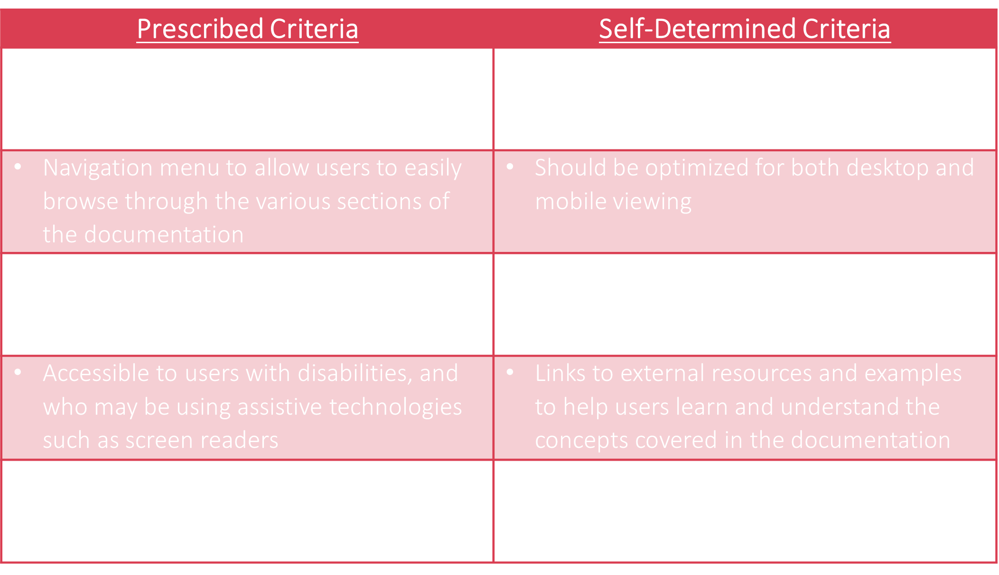
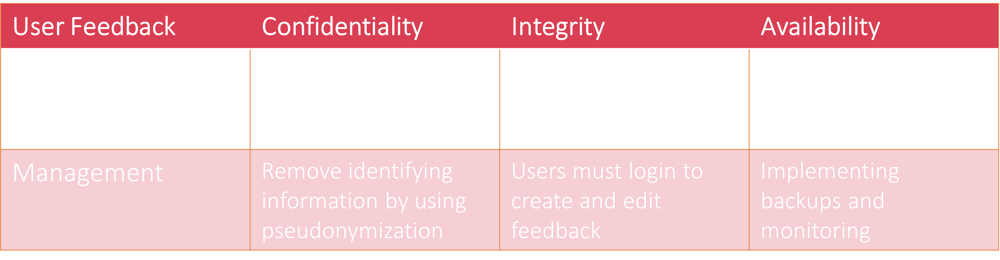
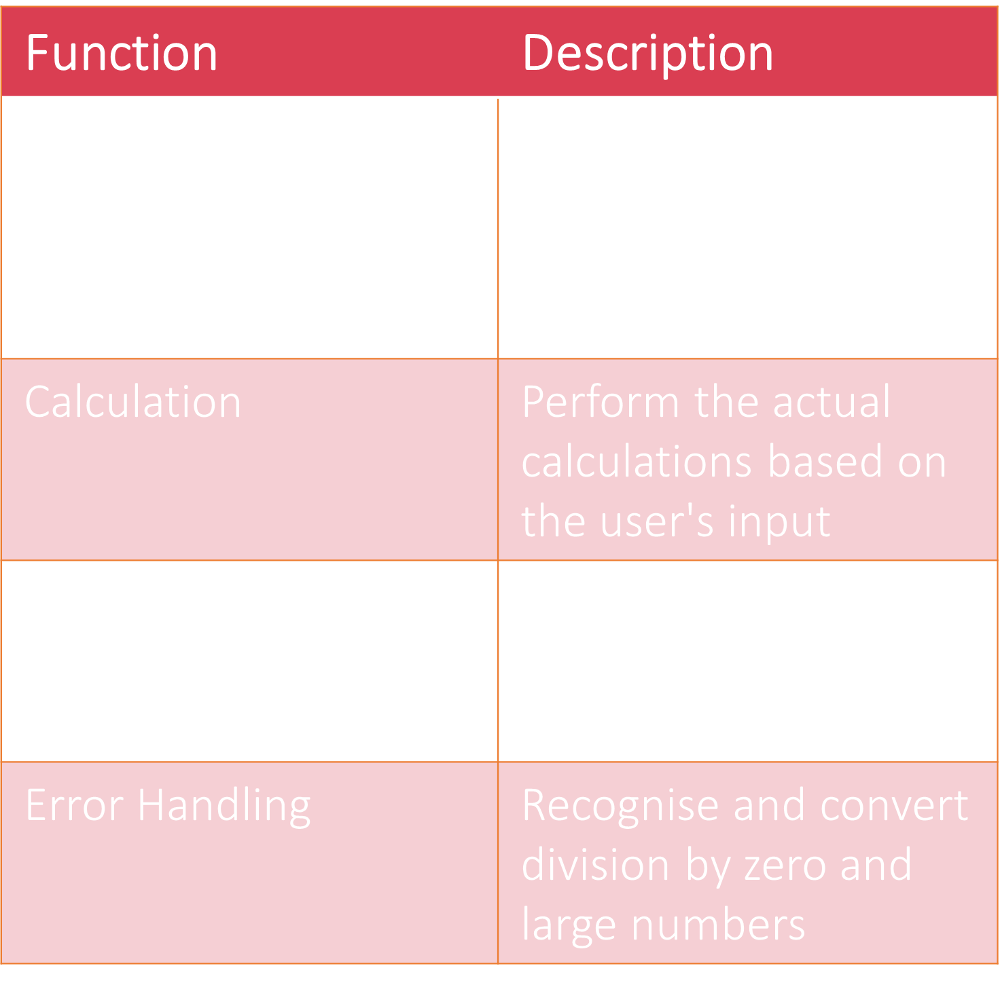

The "Explore" stage involves researching and gathering information about the problem or need that the digital solution is intended to address. This includes identifying the target audience, gathering data about their needs and
preferences,
and researching similar solutions that have been developed in the past. This helps ensure that the solution is based on a thorough understanding of the problem and the context in which it will be used.
Establishing success criteria is important because it helps to define what you want to achieve with your digital solution and to measure whether they have been acheived. This can help to focus your efforts, allocate resources
appropriately, and make informed decisions about the direction of the project. It also helps to ensure that the solution meets the needs of users and clients, and that it delivers the intended benefits. By establishing clear success
criteria at the of your documentation, you can more easily track progress and identify any areas that need improvement.
## Some Questions you can ask when creating a criteria for your solution:
Functionality:
What specific tasks or processes does the digital solution need to perform? How will it be used by the target audience? What are the requirements for data input, storage, and output?
Performance:
What are the acceptable levels of speed, reliability, and scalability for the digital solution? How will it be affected by factors such as network connectivity and device capabilities?
Usability:
How easy is it for the target audience to use the digital solution? What are the most common user actions and how are they accomplished? Are there any usability issues that need to be addressed, such as a cluttered interface or
difficult navigation?
Accessibility:
How easy is it for people with disabilities to use the digital solution? Are all features and functions available to users with assistive technologies? Is the solution compliant with relevant accessibility standards, such
as WCAG 2.0?
## Examaple

Notice how there is a section for criteria provided by the client (Prescribed) and another for some extras you as the developer thinks may be useful (Self-determined)
You should list your criteria in a way that is measurable and can be tested so that it is simpler to evaluate.
#Possible Data Sources
It is important to think ahead about the programming elements needed for your solution because the functions will determine the capabilities and behaviors of the solution. By considering the functions that are needed beforehand, you can ensure that the solution is able to support the desired functionality. This can also help break your projects into smaller bite sized peices for each function. In addition, by thinking about the functions that are needed, you can identify any potential challenges or constraints that may need to be addressed during the development process. By planning ahead and considering the programming elements that are needed, you can create a digital solution more efficiently.
## Things to consider when selecting and documenting data sources:
Ecomonical risk:
What is the budget for acquiring and maintaining the data?
Quality:
How accurate and reliable is the data? Does the source have a good track record for providing high-quality data, or is the data known to be flawed in some way?
Data Method:
How will the data be accessed? Is the data available through APIs or other programmatic means, or will it need to be manually downloaded and processed?
Integrity:
How frequently is the data updated? Is the data updated with a frequency that is sufficient for the needs of the digital solution?
Data Formatting:
What is the format of the data? Is the data provided in a format that can be easily processed by your application, or will it require additional transformation or tidying?
## Examaple

This Example is a table using the CIA triad (confidentiality, Integrity, and Accessibility) for user feedback as a data source
You could use a mindmap or write a paragraph about each data source if you prefer
#Programming Elements
Thinking about Data Sources is important to ensure that you have access to the data that is necessary to support the desired features and functionality of the solution. Data quality and integrity are also important considerations, as poor
quality data can negatively impact the accuracy and usefulness of the solution. In addition, some data sources may come with a cost, so it is important to consider the budget and whether the cost of the data is justified by the value it will
bring to the solution. By considering these factors, you can ensure that you are using reliable and appropriate data to support the development of the digital solution.
## Questions to help identify functions with your app:
Main Purpose:
What is the main purpose of the app? What tasks or actions does the app need to enable users to perform?
Navigation:
How will users navigate within the app? How do your buttons, tabs, search bars, and links work within the app?
Data:
What data will the app need to store and manage? How will the app handle user accounts, preferences, and other personal data?
URL's and API's:
What external services or APIs will the app need to integrate with? How will the app retrieve and use data from these sources?
Error handling:
What are the ways it can be missused? How will the app guide users through common tasks and actions, and how will it handle errors or exceptional cases?
## Examaple

This Example is a table of programming elements for a calculator application
You could use a mindmap, table, or a rich list to display your programming elements
#Usablilty Elements and Principless
It is important to consider usability elements and principles when creating a digital solution because usability refers to the ease with which people can use a product or system. A digital solution that is easy to use will be more likely to be adopted. There are several usability elements that are important to consider within layout and organization of the user interface. Principles of usability, such as simplicity, consistency, and contrast, ensure that the solution is easy to use and look at. By considering usability elements and principles, you can create a digital solution that has great utility and is more user-friendly.
Describe how you will use usablilty elements like:
Pickers
Lists
Buttons
Icons
Modals
And how they will effect usability principles like:
Accessibility
Learnability
Utility
Responsiveness
Consistency
## Examaple
Then you would have annotations to the usability elements and explain how they add to a possitive effect on the usability principles.
This is usually done with annotations but you could have indepth descriptions about the usability elements and principles otherwise.